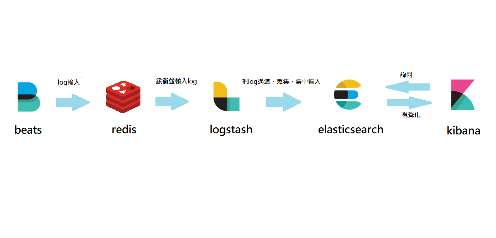

何謂 ELK？
ELK 是指 ElasticSearch、Logstash 和 Kibana 這三個開源軟體的集合套件，這三個軟體可以組成一套日誌 ( log ) 分析和監控架構但這並非全部，架構會隨著使用者需求環境等因數增加或減少，或者增加一些其他套件
Elasticsearch：Elasticsearch 是一個實時的分佈式搜索分析引擎，它能讓你以一個之前從未有過的速度和規模，去探索你的數據。它被用作全文檢索、結構化搜索、分析以及這三個功能的組合，Elasticsearch 中沒有一個單獨的組件是全新的或者是革命性的。全文搜索很久之前就已經可以做到了，就像早就出現了的分析系統和分佈式數據庫。革命性的成果在於將這些單獨的，有用的組件融合到一個單一的、一致的、實時的應用中。它對於初學者而言有一個較低的門檻，而當你的技能提升或需求增加時，它也始終能滿足你的需求。
logstash：是一款輕量級的日誌搜集處理框架，可以方便的把分散的、多樣化的日誌搜集起來，並進行自定義的處理，然後傳輸到指定的位置，比如某個伺服器或者文件。
Kibana：Kibana 是一款開源的數據分析和可視化平台，它是 Elastic Stack 成員之一，設計用於和 Elasticsearch 協作。您可以使用 Kibana 對 Elasticsearch 索引中的數據進行搜索，查看，交互操作。您可以很方便的利用圖表，表格及地圖對數據進行多元化的分析和呈現。Kibana 可以使用大數據通俗易懂。它很簡單，基於瀏覽器的界面便於您快速創建和分享動態數據儀表板來追踪 Elasticsearch 的實時數據變化。搭建 Kibana 非常簡單。您可以分分鐘完成 Kibana 的安裝並開始探索 Elasticsearch 的索引數據，不需要額外的基礎設施。
Redis：是 REmote DIctionary Server（ 遠程字典服務器 ）的縮寫，它以字典結構（ key-value 鍵值對結構 ）存儲數據，並允許其他應用通過 TCP 協議讀寫字典中的內容。所以，redis 是一個 key-value 存儲系統，或者說是一個 key-value 數據庫，因此常常被用在需要快取一些資料的場合，可以減輕許多後端資料庫的壓力
架構圖
